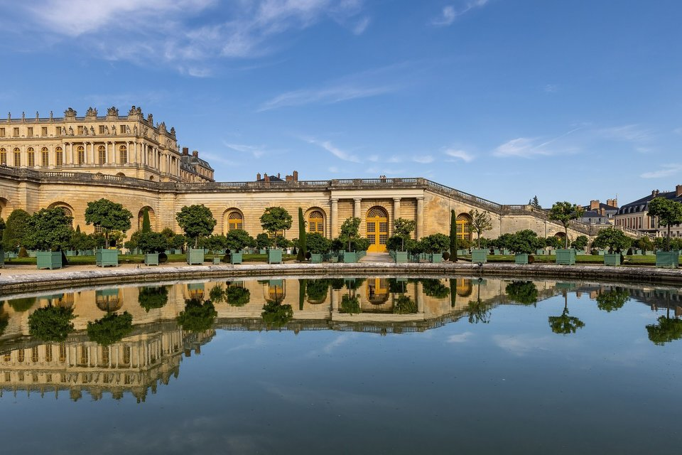

France · Versailles
Versailles audio guide
22 stops · 31 min · offline · plays as you arrive
The guide price is €3.99. This button is a placeholder. It does not open checkout and does not take payment. Email hello@getearwise.com.
A 22-stop offline audio guide to Versailles in Versailles, recorded in 10 languages and designed to play as you arrive. It covers Louis XIV's palace, the Hall of Mirrors, the formal gardens, and the Trianon estates. Download once; you will not need a signal on the ground.
Stops
- 1
The Royal Gate
This part of the route looks at The Royal Gate.
Free sample: stop 1
Play0:00 / –:––Read along
The Royal Gate, a railing of iron and gold about eighty metres wide, closes off the inner royal courtyard of the palace.
The first gate was made in the 1680s under the architect Jules Hardouin-Mansart, and only those with the right rank could pass it in a carriage. It disappeared during the Revolution.
The gate you see is a faithful re-creation, unveiled in 2008, made with fifteen tonnes of iron and about one hundred thousand gold leaves, topped by the crown and the king's emblem.
The original gate was the work of several of the best ironsmiths of the day, working to Hardouin-Mansart's design around 1680. It was gilded, set between ornate pillars, and divided the vast forecourt from the royal courtyard closer to the palace. Look at how the gate frames your view of the old brick-and-stone heart of the château beyond: it was designed to stage the approach to the king.
The old gate did not survive the eighteenth century. Much of it was taken down in the early 1770s to make room for the new Gabriel wing, on your right, and a wooden fence put up instead, meant to be provisional. That fence was still there on the fifth and sixth of October 1789, and it made it easier for the crowd that marched from Paris to get into the courtyard and then into the palace. An order of 1794 swept away what was left of the gate.
In 1838 King Louis-Philippe placed a bronze equestrian statue of Louis XIV here, as part of his museum of French history. When the new gate was made, between 2005 and 2008, the statue was moved to the square in front. The re-creation was fiercely debated: its architect presented it as a faithful return to the past, while critics argued that the surviving engravings were too few to know exactly what the old gate looked like.
- 2
The Marble Court
The next story is about The Marble Court.
Script and audio included when you buy - 3
The Royal Chapel
Here the guide turns to The Royal Chapel.
Script and audio included when you buy - 4
The Hercules Salon
A short story at this point covers The Hercules Salon.
Script and audio included when you buy - 5
The Apollo Salon
This stop is given to The Apollo Salon.
Script and audio included when you buy - 6
The War Salon
Stand here for the story of The War Salon.
Script and audio included when you buy - 7
The Hall of Mirrors
The narration at this pin is about The Hall of Mirrors.
Script and audio included when you buy - 8
The King's Bedchamber
From this spot the guide talks through The King's Bedchamber.
Script and audio included when you buy - 9
The Queen's Bedchamber
You hear about The Queen's Bedchamber at this stage of the visit.
Script and audio included when you buy - 10
The Coronation Room
This is the moment on the route for The Coronation Room.
Script and audio included when you buy - 11
The Gallery of Great Battles
This part of the route looks at The Gallery of Great Battles.
Script and audio included when you buy - 12
The Royal Opera
The next story is about The Royal Opera.
Script and audio included when you buy - 13
The Water Parterre
Here the guide turns to The Water Parterre.
Script and audio included when you buy - 14
The Latona Fountain
A short story at this point covers The Latona Fountain.
Script and audio included when you buy - 15
The Orangery
This stop is given to The Orangery.
Script and audio included when you buy - 16
The Colonnade
Stand here for the story of The Colonnade.
Script and audio included when you buy - 17
The Apollo Fountain
The narration at this pin is about The Apollo Fountain.
Script and audio included when you buy - 18
The Grand Canal
From this spot the guide talks through The Grand Canal.
Script and audio included when you buy - 19
The Grand Trianon
You hear about The Grand Trianon at this stage of the visit.
Script and audio included when you buy - 20
The Petit Trianon
This is the moment on the route for The Petit Trianon.
Script and audio included when you buy - 21
The Queen's Theatre
This part of the route looks at The Queen's Theatre.
Script and audio included when you buy - 22
The Queen's Hamlet
The next story is about The Queen's Hamlet.
Script and audio included when you buy
On the map
All 22 stop pins for this guide are marked. Open map